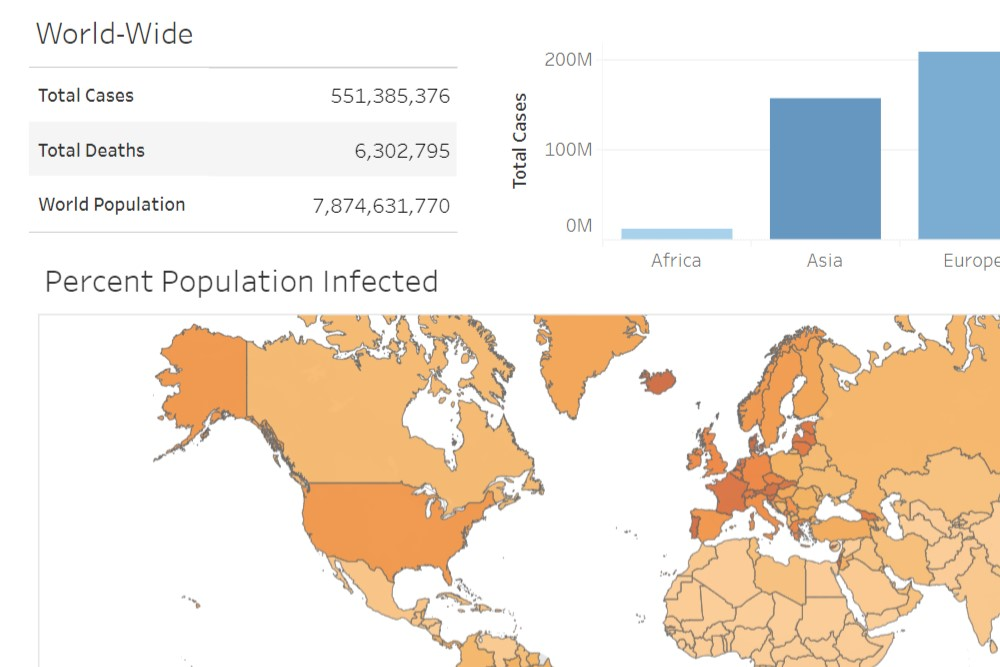

Data Cleaning in SQL
In this project I have taken raw housing data and transformed it in SQL Server to make it more usable for analysis.

Designed by Prince Raj
_Skilled in SQL, Python, Tableau, Power BI, RDBMS, Django_
In this project I have taken raw housing data and transformed it in SQL Server to make it more usable for analysis.
In this project, I have used SQL Server to explore global COVID-19 data from 20-02-2020 to 06-07-2022, along with a few queries specific to India.

In this dashboard I have shown Covid-19 global deaths and vaccinations data from 20-02-2020 to 06-07-2022.

In this project, I have shown what variables affect the gross revenue of movies using python libraries.